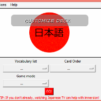

Projects
To accompany my theory-based Cinema and Media Studies major, I produce media in a variety of forms including: photography, videos/film, web designs, software, and digital art. Most of these skills are self-taught, aside from python programming and video production, which I've taken college courses in. Check out some of my work below.
Web Design/Development
Audiocracy

Description: Democratize your party playlists; have your guests contribute to one unified playlist; no DJ required.
Status: On hiatus
Skills used: HTML, CSS, Bootstrap, some Javascript
Partners?: Yes, Galen Chuang and Julia Han
Ryouri Restaurant Website

Description: Engage with Japanese culture and cuisine at Ryouri Restaurant.
Status: On hiatus (until I learn PHP)
Skills used: HTML, CSS, Bootstrap, some Javascript
Partners?: No
Nourish Int'l E-Newsletter
Description: A thank you e-newsletter for people who donated to Nourish during the 2015 Giving Challenge. Optimized for gmail.
Status: Complete
Skills used: HTML table layout, inline CSS
Partners?: No
Software Development
GenkiFLASH

Description: A flash-card program for Japanese language learners, based on the curriculum from Eri Banno's Genki I textbook and workbook set.
Status: Ongoing
Skills used: Python (with Tkinter GUI)
Partners?: None
Photography
Spring 2015 Gallery
Fall 2014 Gallery
Spring 2014 Gallery
Videography
WCTV Segments
Short Films
Digital Art
2016 Yuki Matsuri T-Shirt Design Contest Winner
Description: My entry for Japan Club's 2016 Yuki Matsuri T-shirt Design contest.
Status: Complete
Skills used: Adobe Illustrator
Partners?: None
Church vs State T-Shirt
Description: A flash-card program for Japanese language learners, based on the curriculum from Eri Banno's Genki I textbook and workbook set.
Status: Ongoing
Skills used: Python (with Tkinter GUI)
Partners?: None